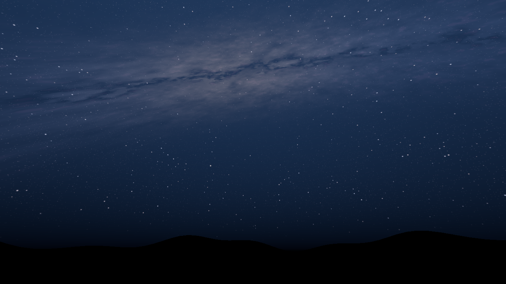

This mosaic treatment was rejected for its fish-scale appearance. See the replacement relief study.
The band gains stepped light and dust patches. Four small star groupings add landmarks; the chain on the right and kite on the left are visible here.
Offline renders of the production sky shader. The smooth horizon is a test silhouette, not in-game terrain. All variants use identical camera, palette, exposure and star opacity.

Full revised image | Band only | Checks and limitations | First sky study